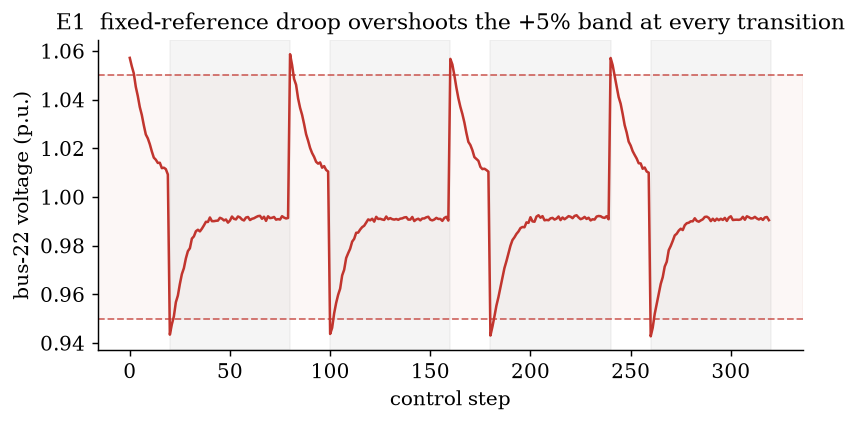
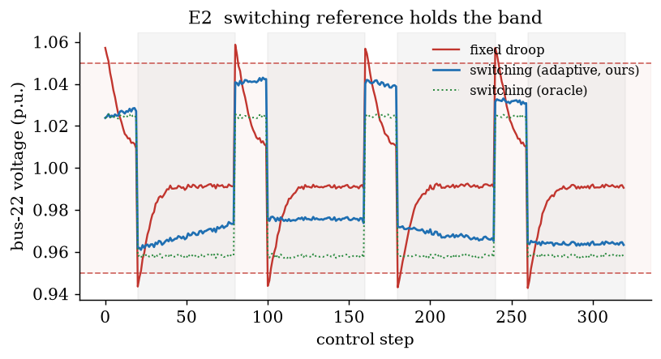
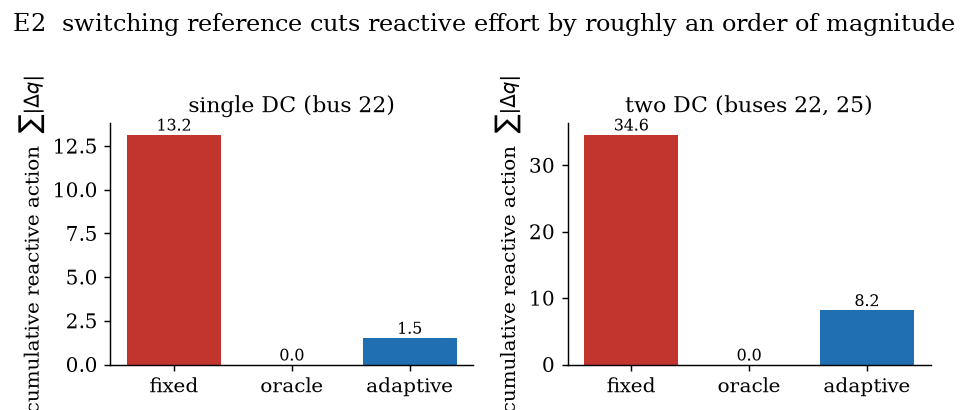
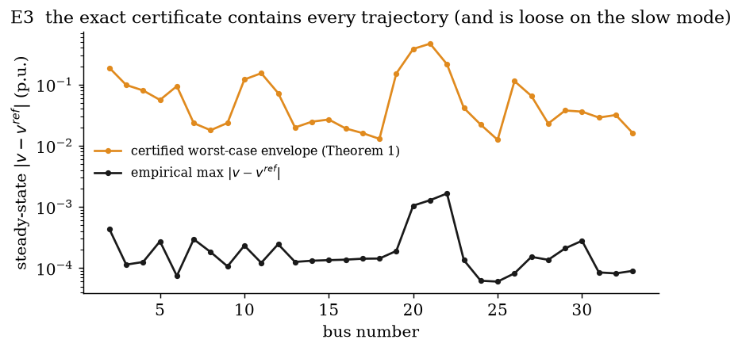
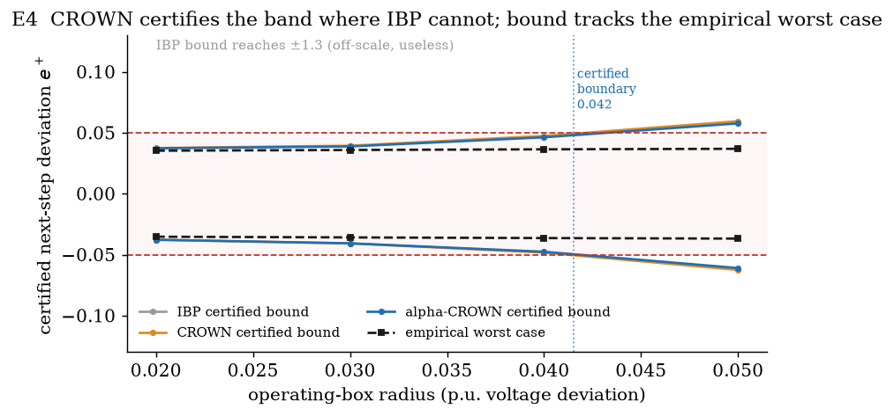
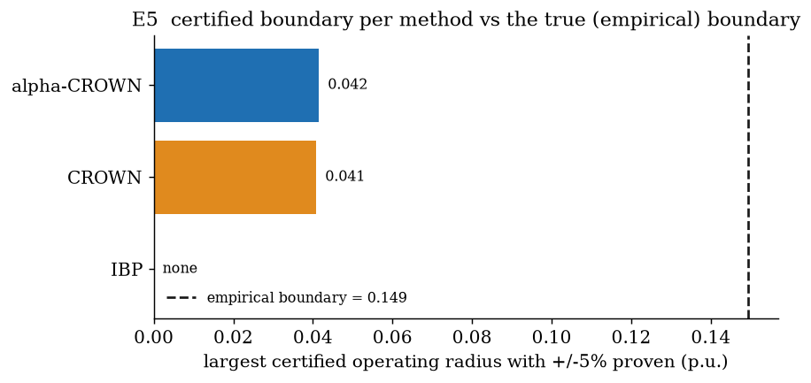

Certifying a switching-reference droop exactly, and its neural successor with CROWN bound propagation.
[Paper being verified] [Code] [Results] [Verification]

A large AI training cluster steps its active power by tens of percent every few seconds, synchronously across thousands of GPUs, because the training loop alternates between a compute phase that pulls full power and a communication phase that idles the accelerators while gradients sync. That square wave lands on a distribution feeder sized for slowly varying load, so the bus voltages swing with it and cross the plus-or-minus 5 percent limit that every interconnection agreement is written against, which is part of why utilities are slow to connect these campuses. On a radial feeder the voltage at each bus is an affine function of the power injected along the path back to the substation, so a reactive source at the data-center bus can push the voltage back, and the control problem is how much reactive power to inject from local voltage alone, fast enough for a load that moves in seconds. The paper we verify solves that with a decentralized droop whose reference switches with the workload mode and proves the tracking error contracts when \(0 \prec K \prec 2X^{-1}\). We add the verification, and it splits in two because the published controller is piecewise affine, so per mode the closed loop is linear and its safety is a spectral radius and a matrix sum rather than a search, which we compute exactly on the real IEEE 33-bus feeder where the closed-form envelope contains every trajectory while using 1.3 percent of it. Then we put a small neural controller in the same loop and certify it with CROWN bound propagation, which proves for every voltage state in an operating box and every data-center load across the full mode range, not a sampled fraction of them, that one step holds every bus inside the band, with a certified one-step contraction of 0.61. The one idea the work turns on is that an affine controller's guarantee is a closed-form calculation, and bound propagation carries that same kind of guarantee to a nonlinear network over a whole region at once, which is the object an operator needs before a learned controller goes near a real feeder, because a sampled confidence score is not something you can put in an interconnection study but a proof over the operating envelope is.
TL;DR: the paper's switching-reference controller is certified exactly, a neural controller trained in the same loop is certified by CROWN to hold every bus inside plus-or-minus 5 percent for every input in an operating box of radius 0.04 p.u., and the certified bound is within 3.05 times the empirical worst case where interval propagation is 26 times off and proves nothing.
The system is a chain, and it helps to name every link before writing any code, because the guarantee has to survive all the way down it. At the top is the GPU cluster, whose training loop sets a two-level active-power trace. That trace is the disturbance into the feeder, whose LinDistFlow physics turns power injections into bus voltages. The actuator is the inverter reactive power at the data-center bus, driven by a decentralized droop that sees only local voltage. The constraint is the plus-or-minus 5 percent band, which is a hard interconnection limit rather than a soft objective. And the certificate sits on top of the whole loop and has to hold for the states and loads the system actually reaches. Everything below is one pass down that chain, first for the affine controller where the certificate is closed form, then for the neural controller where bound propagation stands in for the closed form.
The plant. On the radial feeder LinDistFlow linearizes the power flow to an affine map from injections to per-unit voltage, with \(R, X\) the positive-definite path-overlap sensitivity matrices built from the line impedances,
The controller. Each bus runs the same decentralized reactive droop from its own local voltage, and the switching reference moves the setpoint with the workload mode so the droop stops re-fighting the predictable swing,
Substituting the droop into the plant gives a linear system on the tracking error \(e_t = v_t - v_t^{\text{ref}}\),
so Theorem 1's condition \(0 \prec K \prec 2X^{-1}\) is exactly \(\rho(A) < 1\), and Proposition 2's choice of the two mode references \(b \pm \tfrac12 R(\bar p(0) - \bar p(1))\) cancels the mode-transition term in \(d_t\), leaving only the intra-mode fluctuation. This is the whole reason the guarantee is exact, because per mode the closed loop is linear, and a linear system with a box-bounded disturbance has a safety condition you can check in closed form.
The neural successor. We replace the reactive policy with a small MLP \(\pi_\theta\) and study the one-step closed-loop deviation as a network embedded in the fixed physics,
where \(c = X q_{\text{base}}\) is the constant nominal dispatch. Bound propagation (auto_LiRPA: IBP, backward CROWN, alpha-CROWN) then returns sound per-bus lower and upper bounds on \(e^+\) that hold for every \((e, p)\) in the operating box at once, and if that certified box sits inside \([-0.05, 0.05]\) the band is proven, which is the network analog of the affine check above.
Five seeds where the workload noise is stochastic, mean over seeds. Every number traces to a per-seed JSON a script wrote. Simulation-only.

The fixed droop breaches plus-5 percent at every communication transition, peaking at 1.059 p.u., because it holds the reference at 1 and over-corrects when the load drops, and it spends 13.2 p.u. of cumulative reactive action doing it. The adaptive switching reference tracks the mode from local voltage only and holds the deviation to 0.044 inside the band with 1.5 p.u. of action, so it cuts the reactive effort 8.6 times, and the model-based oracle cancels the mode disturbance so completely that its effort drops to essentially zero.

The two-data-center case at buses 22 and 25 keeps the same shape, and the adaptive controller grazes the band at 0.054 on rare intra-mode peaks, 0.006 percent of bus-steps, which we report straight because the harder scenario is where the local estimator is most stretched.
This is where the two halves meet. On the left is the exact certificate for the published affine controller, on the right is the CROWN certificate for the neural one, and the contrast between them is the point of the whole project.

The gain condition \(0 \prec K \prec 2X^{-1}\) holds on the real reactance matrix, the closed loop contracts with \(\rho(I - XK) = 0.99941\), and the closed-form Theorem 1 envelope \(\sum_n |A^n|\,\bar d\) contains every bus of every trajectory of the linear closed loop, which uses only 1.3 percent of it. The envelope is tight at the well-controlled buses and roughly two orders of magnitude loose on the weakly-controllable slow mode near the unit circle, because a diagonal decentralized gain leaves that mode barely damped, and that looseness is precisely the gap that motivates bound propagation, which reasons about the realized map rather than a worst-case norm.

The MLP is trained by behavior cloning the switching controller plus a penalty on its worst-case one-step band excursion, and CROWN then certifies that for every voltage state within 0.04 p.u. of nominal and every data-center load across the full compute-to-comm range, one step keeps every bus inside plus-or-minus 5 percent, with a certified one-step contraction of \(\gamma = 0.61\) toward each mode equilibrium. The certified bound is within 3.05 times the empirical worst case, while interval propagation reaches plus-or-minus 1.3 and certifies nothing, so the backward relaxation is what makes the guarantee usable and the difference is 26 times at the band. This certificate is sound for all inputs in the box, not a sampled fraction, which is the whole difference from a sampled certificate.

Growing the operating box, CROWN certifies the band up to radius 0.041 and alpha-CROWN up to 0.042, so the optimized relaxation rescues a sliver plain CROWN loses, and both stop well before the true empirical boundary at 0.149 where the network's own worst case first leaves the band. A certificate that holds everywhere it claims and visibly fails past a boundary is more credible than one shown without edges, and the gap from 0.042 certified to 0.149 empirical is the honest conservativeness of sound bound propagation, the price paid for proving the property for every input rather than sampling it.
| Exp | Scenario | Controller | max |v-1| | violation % | reactive effort |
|---|---|---|---|---|---|
| E1/E2 | single DC (bus 22) | fixed droop | 0.0587 | 0.168 | 13.16 |
| E1/E2 | single DC (bus 22) | switching (oracle) | 0.0429 | 0.000 | 0.00 |
| E1/E2 | single DC (bus 22) | switching (adaptive, ours) | 0.0439 | 0.000 | 1.53 |
| E1/E2 | two DC (22, 25) | fixed droop | 0.0611 | 0.272 | 34.64 |
| E1/E2 | two DC (22, 25) | switching (adaptive, ours) | 0.0538 | 0.006 | 8.21 |
| Certificate | Result |
|---|---|
| E3 gain condition \(0 \prec K \prec 2X^{-1}\) | satisfied, \(\rho(I-XK)=0.99941\), C = 48.82 |
| E3 all trajectories inside envelope | true, uses 1.3% of it |
| E4 max certified radius (IBP / CROWN / alpha-CROWN) | none / 0.04 / 0.04 |
| E4 certified band at r = 0.04 | true, bound 3.05x the empirical worst case |
| E4 one-step contraction \(\gamma\) (compute / comm) | 0.614 / 0.592 |
| E5 certified boundary (CROWN / alpha-CROWN) vs empirical | 0.041 / 0.042 vs 0.149 |
The limits are concrete and worth stating plainly. Everything here is simulation on a linearized model, LinDistFlow drops the DistFlow loss terms so it is an approximation of the true power flow, and the load is a modeled two-mode square wave rather than the paper's measured DGX trace, so the switching structure is faithful but the exact waveform is not. The nominal loads are scaled by half so the base feeder sits inside the band before the data center switches, which is a modeling choice that keeps the data-center effect from being masked by the textbook feeder's own stressed laterals, stated in NOTES.md. The exact certificate is sound but conservative on the slow mode where the spectral radius sits at 0.9994, and the neural certificate is one-step band invariance and one-step contraction over a defined box, not a multi-step or global proof, so it covers the box and nothing outside it. We use auto_LiRPA rather than the 2019 IBM CROWN repo Prof. Cui pointed to, because that repo is TensorFlow-1 and does not build on current Python, and auto_LiRPA is the maintained implementation of the same CROWN algorithm family, with the IBM repo cited as the original. There is no hardware.
python -m pip install "torch==2.5.1" --index-url https://download.pytorch.org/whl/cpu
python -m pip install numpy==2.2.6 scipy==1.18.0 matplotlib==3.11.0 pyyaml==6.0.3 pytest==9.1.1
python -m pip install --ignore-requires-python \
"git+https://github.com/Verified-Intelligence/auto_LiRPA.git"
make test # grid model, controllers, Theorem 1 gain condition
make quick # smoke-test every experiment end to end, minutes on CPU
make full # the reported numbers: 5 seeds, full horizons, full training
make figures # regenerate every figure from saved JSON, no re-simulation
colab/verify.ipynb runs the exact and CROWN certification end to end on a free Colab.
The same composition, a certified network bound pushed one step through a physics model, is what a certified version of learned grid control at data-center scale will need, because the learned policies Prof. Cui's line of work points toward only earn deployment if their safety survives as a proof rather than a sampled score. The open problem is visible right here in E5, where the certified operating box is a fraction of the true safe one and shrinks as the network deepens, so the work that matters next is tightening that gap, through better relaxations and training that is verification-aware from the start, until the certified region is large enough to cover the states the grid actually visits.
@misc{singh2026verifiedvoltage,
title = {Verified Voltage Control for AI-Training Data Centers},
author = {Sehaj Singh},
year = {2026},
howpublished = {\url{https://github.com/sehajr-singhs/verified-voltage-control}}
}